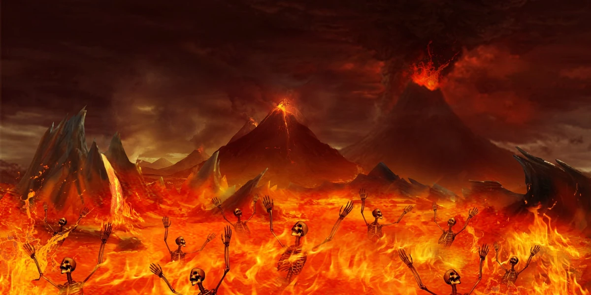
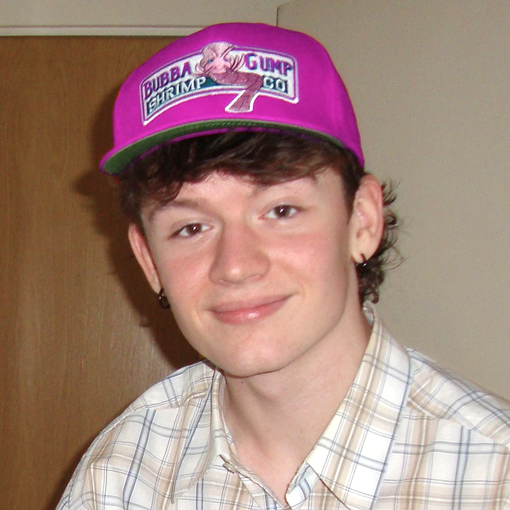
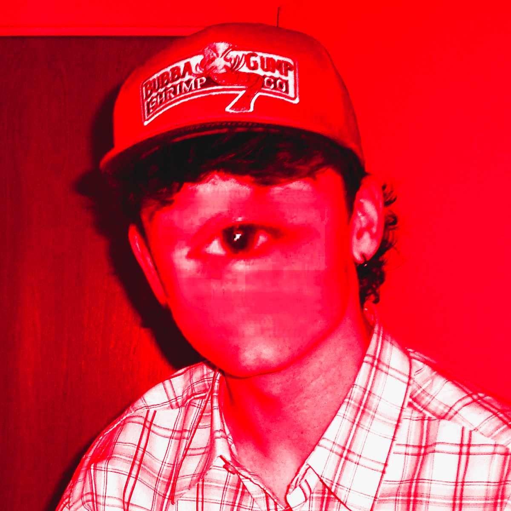
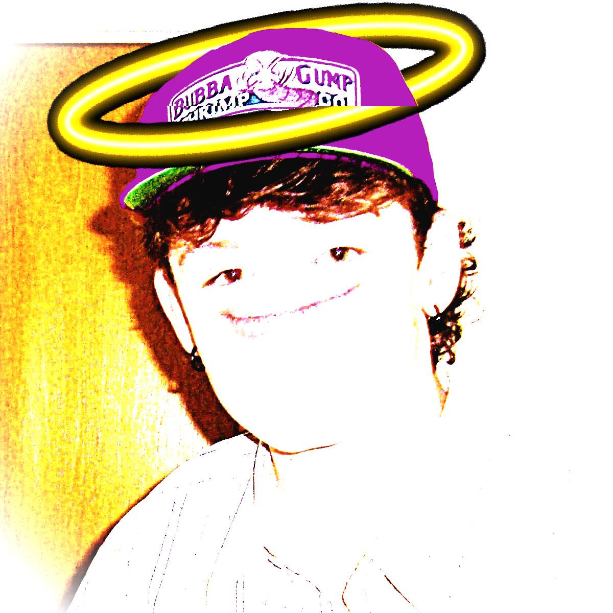

0.0s
Press and hold the ANGELIC MEWZE with your mouse. Don't let go. Don't look away.
The following material may be too disturbing for some viewers.




Press and hold the ANGELIC MEWZE with your mouse. Don't let go. Don't look away.